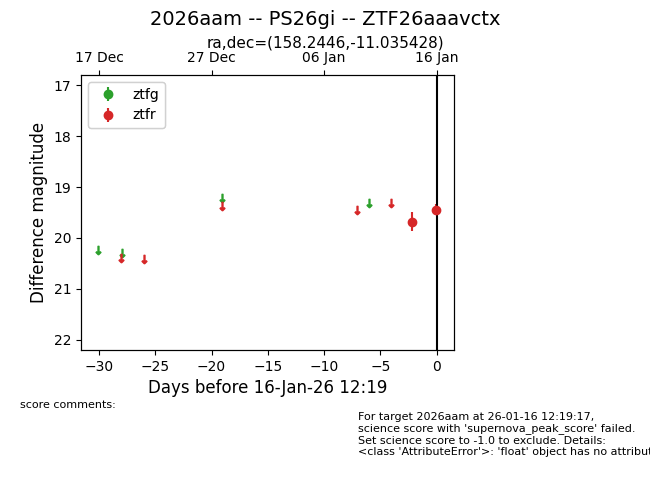
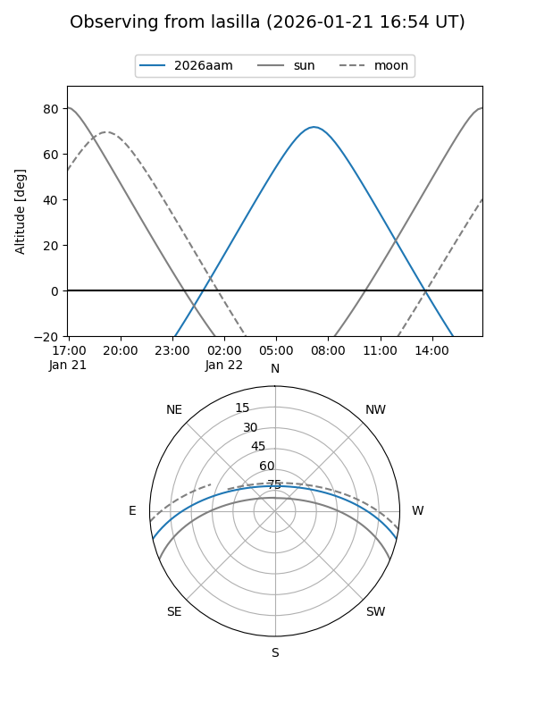
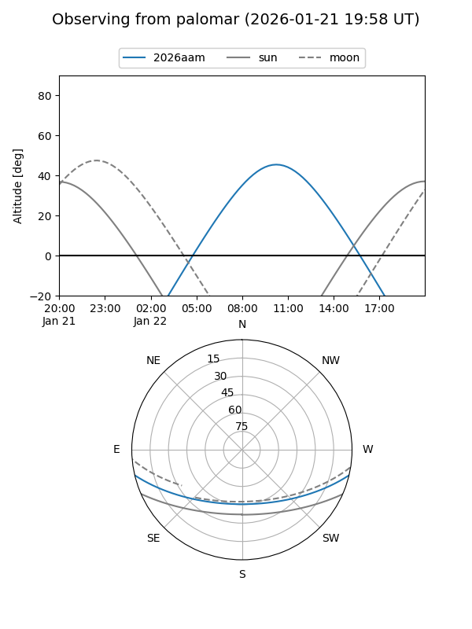
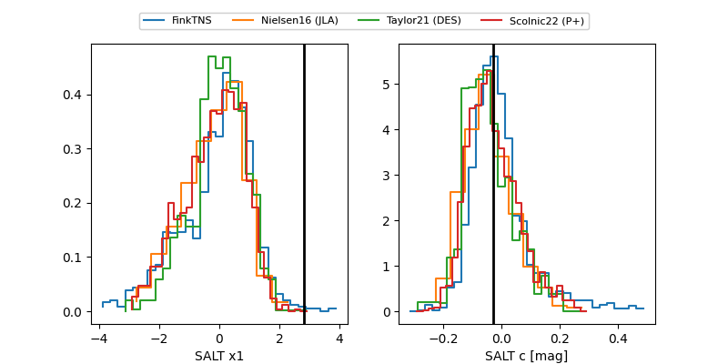

2026aam
Target 2026aam at 2026-01-25 09:21
Aliases and brokers:
FINK: link
Lasair: link
ALeRCE: link
TNS: link
YSE: link
alt names
ZTF26aaavctx (ztf,fink_ztf)
2026aam (tns,yse)
PS26gi (panstarrs)
Coordinates:
equatorial (ra, dec) = 158.2446,-11.03543
equatorial (HMS+DMS) = 10:32:58.71,-11:02:07.54
galactic (l, b) = (256.9461,+39.17006)
Flags:
Photometry:
last ztfg=19.17, ztfr=19.22
1 ztfg, 5 ztfr detections
Lightcurve

Visibility


Additional plots
